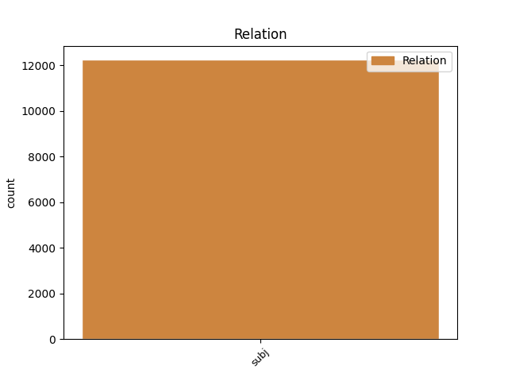
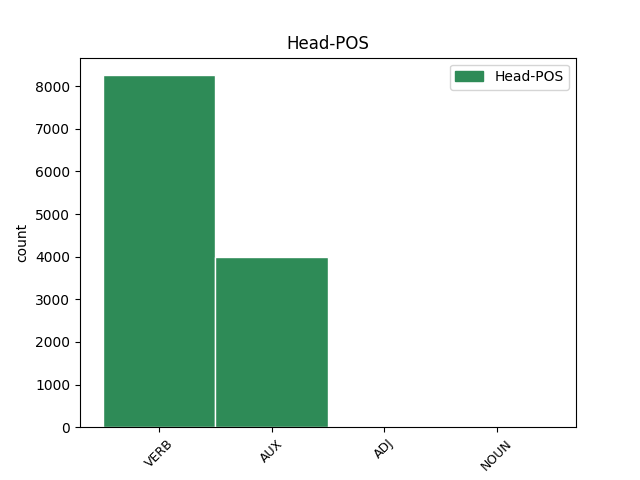
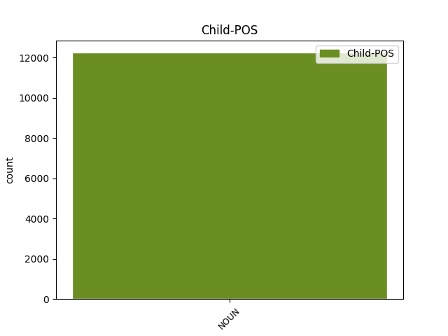

Distribution of features within this leaf



Agreement Rules sorted by frequency.
- When the dependent token is the subject(subj) of the head token, and the dependent token is NOUN.
1 Conviene _ _ _ _ 0 _ _ _
2 que _ _ _ _ 0 _ _ _
3 ahora _ _ _ _ 0 _ _ _
4 , _ _ _ _ 0 _ _ _
5 en _ _ _ _ 0 _ _ _
6 plena _ _ _ _ 0 _ _ _
7 apoteosis _ _ _ _ 0 _ _ _
8 de _ _ _ _ 0 _ _ _
9 pre-presidencia _ _ _ _ 0 _ _ _
10 ( _ _ _ _ 0 _ _ _
11 presidiremos _ _ _ _ 0 _ _ _
12 la _ _ _ _ 0 _ _ _
13 Unión _ _ _ _ 0 _ _ _
14 Europea _ _ _ _ 0 _ _ _
15 dentro _ _ _ _ 0 _ _ _
16 de _ _ _ _ 0 _ _ _
17 unos _ _ _ _ 0 _ _ _
18 meses _ _ _ _ 0 _ _ _
19 : _ _ _ _ 0 _ _ _
20 rogativas rogativa NOUN NOUN Gender=Fem|Number=Plur 23 subj _ _
21 y _ _ _ _ 0 _ _ _
22 festejos _ _ _ _ 0 _ _ _
23 son ser AUX AUX Mood=Ind|Number=Plur|Person=3|Tense=Pres|VerbForm=Fin 0 _ _ _
24 de _ _ _ _ 0 _ _ _
25 rigor _ _ _ _ 0 _ _ _
26 ) _ _ _ _ 0 _ _ _
27 reflexionemos _ _ _ _ 0 _ _ _
28 críticamente _ _ _ _ 0 _ _ _
29 y _ _ _ _ 0 _ _ _
30 nos _ _ _ _ 0 _ _ _
31 hagamos _ _ _ _ 0 _ _ _
32 un _ _ _ _ 0 _ _ _
33 lifting _ _ _ _ 0 _ _ _
34 metodológico _ _ _ _ 0 _ _ _
35 . _ _ _ _ 0 _ _ _
Disagree Examples:
1 La _ _ _ _ 0 _ _ _
2 firme _ _ _ _ 0 _ _ _
3 intervención intervención NOUN NOUN Gender=Fem|Number=Sing 42 subj _ _
4 del _ _ _ _ 0 _ _ _
5 primer _ _ _ _ 0 _ _ _
6 ministro _ _ _ _ 0 _ _ _
7 , _ _ _ _ 0 _ _ _
8 Mugur _ _ _ _ 0 _ _ _
9 Isarescu _ _ _ _ 0 _ _ _
10 , _ _ _ _ 0 _ _ _
11 quien _ _ _ _ 0 _ _ _
12 garantizó _ _ _ _ 0 _ _ _
13 la _ _ _ _ 0 _ _ _
14 solidez _ _ _ _ 0 _ _ _
15 de _ _ _ _ 0 _ _ _
16 BCR _ _ _ _ 0 _ _ _
17 , _ _ _ _ 0 _ _ _
18 la _ _ _ _ 0 _ _ _
19 estabilidad _ _ _ _ 0 _ _ _
20 de _ _ _ _ 0 _ _ _
21 las _ _ _ _ 0 _ _ _
22 cotizaciones _ _ _ _ 0 _ _ _
23 de _ _ _ _ 0 _ _ _
24 la _ _ _ _ 0 _ _ _
25 moneda _ _ _ _ 0 _ _ _
26 nacional _ _ _ _ 0 _ _ _
27 , _ _ _ _ 0 _ _ _
28 asimismo _ _ _ _ 0 _ _ _
29 la _ _ _ _ 0 _ _ _
30 convicción _ _ _ _ 0 _ _ _
31 de _ _ _ _ 0 _ _ _
32 la _ _ _ _ 0 _ _ _
33 gente _ _ _ _ 0 _ _ _
34 de _ _ _ _ 0 _ _ _
35 que _ _ _ _ 0 _ _ _
36 fueron _ _ _ _ 0 _ _ _
37 víctimas _ _ _ _ 0 _ _ _
38 de _ _ _ _ 0 _ _ _
39 manipulaciones _ _ _ _ 0 _ _ _
40 especulativas _ _ _ _ 0 _ _ _
41 , _ _ _ _ 0 _ _ _
42 contribuyeron contribuir VERB VERB Mood=Ind|Number=Plur|Person=3|Tense=Past|VerbForm=Fin 0 _ _ _
43 a _ _ _ _ 0 _ _ _
44 traer _ _ _ _ 0 _ _ _
45 de _ _ _ _ 0 _ _ _
46 nuevo _ _ _ _ 0 _ _ _
47 la _ _ _ _ 0 _ _ _
48 calma _ _ _ _ 0 _ _ _
49 . _ _ _ _ 0 _ _ _
1 El _ _ _ _ 0 _ _ _
2 consejo consejo NOUN NOUN Gender=Masc|Number=Sing 14 subj _ _
3 de _ _ _ _ 0 _ _ _
4 Telefónica _ _ _ _ 0 _ _ _
5 y _ _ _ _ 0 _ _ _
6 las _ _ _ _ 0 _ _ _
7 amenazas _ _ _ _ 0 _ _ _
8 con _ _ _ _ 0 _ _ _
9 cierres _ _ _ _ 0 _ _ _
10 parciales _ _ _ _ 0 _ _ _
11 de _ _ _ _ 0 _ _ _
12 las _ _ _ _ 0 _ _ _
13 gasolineras _ _ _ _ 0 _ _ _
14 son ser AUX AUX Mood=Ind|Number=Plur|Person=3|Tense=Pres|VerbForm=Fin 0 _ _ _
15 las _ _ _ _ 0 _ _ _
16 principales _ _ _ _ 0 _ _ _
17 noticias _ _ _ _ 0 _ _ _
18 con _ _ _ _ 0 _ _ _
19 las _ _ _ _ 0 _ _ _
20 que _ _ _ _ 0 _ _ _
21 abren _ _ _ _ 0 _ _ _
22 hoy _ _ _ _ 0 _ _ _
23 los _ _ _ _ 0 _ _ _
24 diarios _ _ _ _ 0 _ _ _
25 económicos _ _ _ _ 0 _ _ _
26 . _ _ _ _ 0 _ _ _
1 El _ _ _ _ 0 _ _ _
2 carácter carácter NOUN NOUN Gender=Masc|Number=Sing 13 subj _ _
3 obligatorio _ _ _ _ 0 _ _ _
4 del _ _ _ _ 0 _ _ _
5 CARE _ _ _ _ 0 _ _ _
6 y _ _ _ _ 0 _ _ _
7 las _ _ _ _ 0 _ _ _
8 sanciones _ _ _ _ 0 _ _ _
9 que _ _ _ _ 0 _ _ _
10 comporta _ _ _ _ 0 _ _ _
11 su _ _ _ _ 0 _ _ _
12 incumplimiento _ _ _ _ 0 _ _ _
13 son ser AUX AUX Mood=Ind|Number=Plur|Person=3|Tense=Pres|VerbForm=Fin 0 _ _ _
14 algunos _ _ _ _ 0 _ _ _
15 de _ _ _ _ 0 _ _ _
16 los _ _ _ _ 0 _ _ _
17 puntos _ _ _ _ 0 _ _ _
18 más _ _ _ _ 0 _ _ _
19 contestados _ _ _ _ 0 _ _ _
20 por _ _ _ _ 0 _ _ _
21 los _ _ _ _ 0 _ _ _
22 sindicatos _ _ _ _ 0 _ _ _
23 . _ _ _ _ 0 _ _ _
1 La _ _ _ _ 0 _ _ _
2 campaña _ _ _ _ 0 _ _ _
3 se _ _ _ _ 0 _ _ _
4 ha _ _ _ _ 0 _ _ _
5 desarrollado _ _ _ _ 0 _ _ _
6 sin _ _ _ _ 0 _ _ _
7 incidentes _ _ _ _ 0 _ _ _
8 lamentables _ _ _ _ 0 _ _ _
9 , _ _ _ _ 0 _ _ _
10 aunque _ _ _ _ 0 _ _ _
11 el _ _ _ _ 0 _ _ _
12 coordinador _ _ _ _ 0 _ _ _
13 general _ _ _ _ 0 _ _ _
14 del _ _ _ _ 0 _ _ _
15 Programa _ _ _ _ 0 _ _ _
16 de _ _ _ _ 0 _ _ _
17 las _ _ _ _ 0 _ _ _
18 Naciones _ _ _ _ 0 _ _ _
19 Unidas _ _ _ _ 0 _ _ _
20 para _ _ _ _ 0 _ _ _
21 la _ _ _ _ 0 _ _ _
22 Observación _ _ _ _ 0 _ _ _
23 Electoral _ _ _ _ 0 _ _ _
24 , _ _ _ _ 0 _ _ _
25 el _ _ _ _ 0 _ _ _
26 vietnamita _ _ _ _ 0 _ _ _
27 Nguyen _ _ _ _ 0 _ _ _
28 Huu _ _ _ _ 0 _ _ _
29 Dong _ _ _ _ 0 _ _ _
30 , _ _ _ _ 0 _ _ _
31 dijo _ _ _ _ 0 _ _ _
32 el _ _ _ _ 0 _ _ _
33 pasado _ _ _ _ 0 _ _ _
34 lunes _ _ _ _ 0 _ _ _
35 que _ _ _ _ 0 _ _ _
36 la _ _ _ _ 0 _ _ _
37 compra compra NOUN NOUN Gender=Fem|Number=Sing 45 subj _ _
38 y _ _ _ _ 0 _ _ _
39 los _ _ _ _ 0 _ _ _
40 obstáculos _ _ _ _ 0 _ _ _
41 al _ _ _ _ 0 _ _ _
42 libre _ _ _ _ 0 _ _ _
43 voto _ _ _ _ 0 _ _ _
44 , _ _ _ _ 0 _ _ _
45 son ser AUX AUX Mood=Ind|Number=Plur|Person=3|Tense=Pres|VerbForm=Fin 0 _ _ _
46 los _ _ _ _ 0 _ _ _
47 temas _ _ _ _ 0 _ _ _
48 que _ _ _ _ 0 _ _ _
49 más _ _ _ _ 0 _ _ _
50 preocupan _ _ _ _ 0 _ _ _
51 a _ _ _ _ 0 _ _ _
52 los _ _ _ _ 0 _ _ _
53 observadores _ _ _ _ 0 _ _ _
54 extranjeros _ _ _ _ 0 _ _ _
55 . _ _ _ _ 0 _ _ _
1 La _ _ _ _ 0 _ _ _
2 vicelehendakari _ _ _ _ 0 _ _ _
3 sostuvo _ _ _ _ 0 _ _ _
4 que _ _ _ _ 0 _ _ _
5 el _ _ _ _ 0 _ _ _
6 Partido _ _ _ _ 0 _ _ _
7 Popular _ _ _ _ 0 _ _ _
8 mantiene _ _ _ _ 0 _ _ _
9 una _ _ _ _ 0 _ _ _
10 " _ _ _ _ 0 _ _ _
11 dinámica _ _ _ _ 0 _ _ _
12 de _ _ _ _ 0 _ _ _
13 deterioro _ _ _ _ 0 _ _ _
14 y _ _ _ _ 0 _ _ _
15 deslegitimación _ _ _ _ 0 _ _ _
16 " _ _ _ _ 0 _ _ _
17 de _ _ _ _ 0 _ _ _
18 las _ _ _ _ 0 _ _ _
19 instituciones _ _ _ _ 0 _ _ _
20 vascas _ _ _ _ 0 _ _ _
21 , _ _ _ _ 0 _ _ _
22 cuyo _ _ _ _ 0 _ _ _
23 " _ _ _ _ 0 _ _ _
24 colofón colofón NOUN NOUN Gender=Masc|Number=Sing 26 subj _ SpaceAfter=No
25 " _ _ _ _ 0 _ _ _
26 fueron ser AUX AUX Mood=Ind|Number=Plur|Person=3|Tense=Past|VerbForm=Fin 0 _ _ _
27 los _ _ _ _ 0 _ _ _
28 insultos _ _ _ _ 0 _ _ _
29 del _ _ _ _ 0 _ _ _
30 parlamentario _ _ _ _ 0 _ _ _
31 Ricardo _ _ _ _ 0 _ _ _
32 Hueso _ _ _ _ 0 _ _ _
33 al _ _ _ _ 0 _ _ _
34 lehendakari _ _ _ _ 0 _ _ _
35 , _ _ _ _ 0 _ _ _
36 Juan _ _ _ _ 0 _ _ _
37 José _ _ _ _ 0 _ _ _
38 Ibarretxe _ _ _ _ 0 _ _ _
39 , _ _ _ _ 0 _ _ _
40 en _ _ _ _ 0 _ _ _
41 el _ _ _ _ 0 _ _ _
42 pleno _ _ _ _ 0 _ _ _
43 del _ _ _ _ 0 _ _ _
44 pasado _ _ _ _ 0 _ _ _
45 viernes _ _ _ _ 0 _ _ _
46 . _ _ _ _ 0 _ _ _